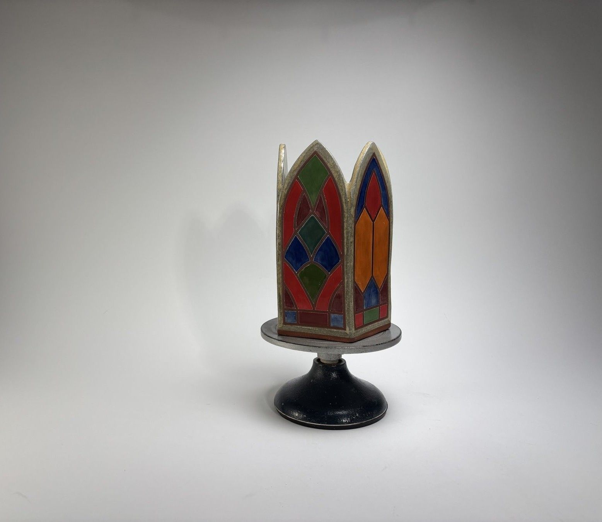

Lane Dye Studio is the work of Lane Dye- functional ceramic stoneware and decorative stained glass panels inspired by gothic architecture.
Handmade in Nashville, TNThe gothic arch has long framed moments of transition and light—as passages from one place to another and as windows that transform light into color. My work explores that same enduring form, one vessel and one panel at a time.